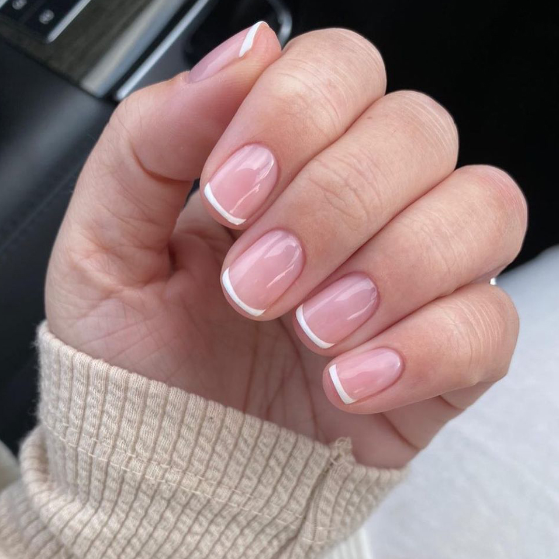

JÁ OUVIU FALAR SOBRE FRANCESINHA?
FER
Preparação da unha Higienize e desinfete as mãos. Afaste delicadamente a cutícula. Retire o brilho da unha natural com uma lixa/buffer, sem afinar a lâmina. Remova completamente o pó. Preparação química Aplique desidratador/nail prep conforme o sistema utilizado. Em seguida, primer ou preparador indicado pelo fabricante. Aplicação da fibra Posicione a fibra de vidro sobre a unha, criando o comprimento desejado. Ajuste a fibra ao formato da unha, deixando-a bem alinhada. Aplique o gel específico para fibra, cobrindo a fibra de maneira uniforme. Curvatura e cabine Faça a modelagem e a curvatura conforme a técnica. Leve à cabine pelo tempo indicado pelo fabricante do gel. Construção Faça a estrutura/apex com gel construtor. Cure novamente na cabine. Confira se a espessura e o ponto de tensão estão adequados. Lixamento Faça o acabamento das laterais, superfície e ponta. Corrija possíveis irregularidades sem comprometer a estrutura. Finalização Retire o pó. Aplique esmaltação em gel ou decoração, se desejar. Finalize com top coat e faça a cura conforme as instruções do produto. ⚠️ Importante: fibra de vidro é uma técnica que exige treinamento. Produtos de gel podem causar sensibilização/alergia quando entram em contato com a pele ou são curados incorretamente. Evite aplicar produto sobre cutícula ou pele e siga rigorosamente o tempo de cura recomendado pelo fabricante.]


.jpeg)